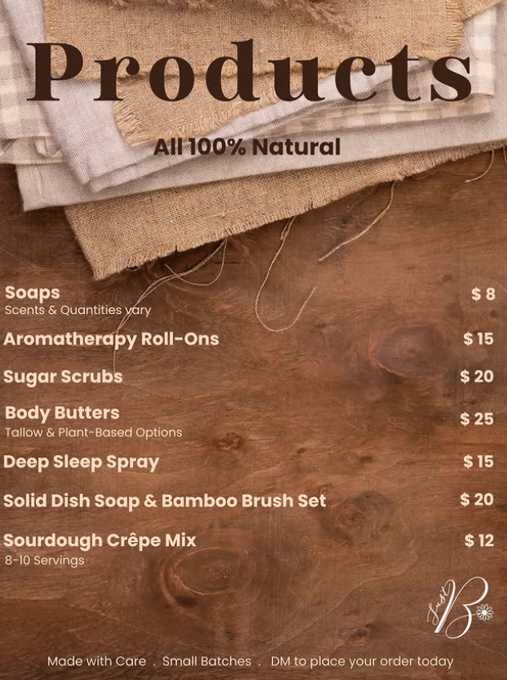

Thoughtful ingredients
Organic oils, natural butters and pure essential oils where indicated.
Handmade in Aylmer, Quebec
Just B pure. Just B natural. Small-batch soaps, roller oils and nourishing body care handcrafted with thoughtfully selected ingredients.
Explore the collection

Natural, handmade bars in changing scents and colours.

Calm, Relieve and Cycle Harmony aromatherapy roll-ons.
Organic exfoliation in Citrus Sunrise and Woodland Escape.
Mango-based and vanilla-infused tallow options.

Rested bedtime linen spray for a calming evening ritual.

Plastic-free dish soap with a bamboo brush set.

Small-batch Sourdough Crêpe Mix for 8–10 servings.
A few favourites
Open any product for its full details.
Organic oils, natural butters and pure essential oils where indicated.
Carefully crafted for quality, freshness and an artisanal finish.
Build a cart and send a request. We check availability before asking you to pay.
Follow along on Instagram
New batches, current scents and availability are shared on Instagram.

View @justb.naturals ↗Personal, simple and direct
Add one or several products while you browse.
Review quantities, add a note, and choose your preferred payment method.
We will confirm availability and pickup or local-delivery details by email.